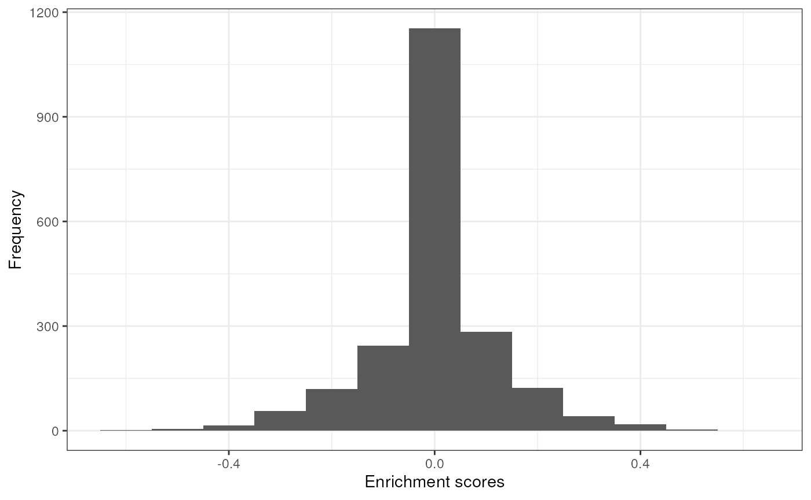
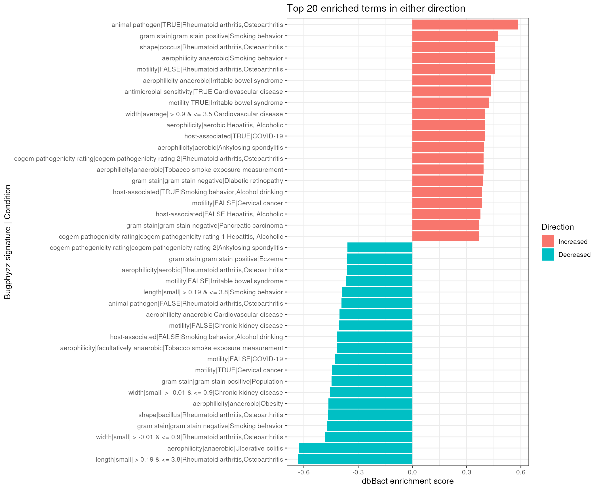

vignettes/articles/enrichemnt_dbbact.Rmd
enrichemnt_dbbact.Rmd
library(bugphyzzAnalyses)
library(bugsigdbr)
library(bugphyzz)
library(dplyr)
library(purrr)
library(tidyr)
library(ggplot2)
library(tidyr)Import BugSigDB:
bsdb <- importBugSigDB() |>
filter(`Host species` == "Homo sapiens") |>
filter(`Abundance in Group 1` %in% c("increased", "decreased")) |>
filter(`Study design` == "case-control")
#> Using cached version from 2024-03-29 13:28:06Import bugphyzz:
bp <- importBugphyzz()
#> Importing multistate data...
#> Using data downloaded on 2024-03-29 13:28:17.
#> Importing binary data...
#> Using data downloaded on 2024-03-29 13:28:29.
#> Importing numeric data...
#> Using data downloaded on 2024-03-29 13:28:32.First, I need to get the signatures that will have more than 10 bugs:
bsdb_ids <- getSignatures(
df = bsdb, tax.id.type = "ncbi", tax.level = "genus", min.size = 10
) |> names() |>
sub("^(bsdb:\\d+/\\d+/\\d+)_.*$", "\\1", x = _)Then, I need two data.frames with experiments that only have two signatures and these signatures are decreased and increased.
dats <- bsdb |>
filter(`BSDB ID` %in% bsdb_ids) |>
group_by(Study, Experiment) |>
mutate(count = n()) |>
ungroup() |>
filter(count == 2) |>
group_by(Study, Experiment) |>
arrange(`Abundance in Group 1`) |>
mutate(comb = paste0(sort(`Abundance in Group 1`), collapse = "-")) |>
ungroup() |>
filter(comb == "decreased-increased") |>
arrange(`BSDB ID`) |>
{\(y) split(y, y$`Abundance in Group 1`)}()Make sure all signatures share the same study, experiment, and condition
cond1 <- all(dats$decreased$Condition == dats$increased$Condition)
cond2 <- all(dats$decreased$Study == dats$increased$Study)
cond3 <- all(dats$decreased$Experiment == dats$increased$Experiment)
all(c(cond1, cond2, cond3))
#> [1] TRUEFinally, I get the list of signatures for both increased and decreased:
sigs <- dats |>
map(~ {
getSignatures(
df = .x, tax.id.type = "ncbi", tax.level = "genus", min.size = 10
)
})
# We already made sure that Study and experiment are the same in the code
## lines above
names(sigs$decreased) <- sub(
"^(bsdb:\\d+/\\d+)/\\d+_.*$", "\\1", names(sigs$decreased)
)
names(sigs$increased) <- sub(
"^(bsdb:\\d+/\\d+)/\\d+_.*$", "\\1", names(sigs$increased)
)
select_cols <- c(
"BSDB ID",
# "Study", "Experiment",
"Condition", "Group 1 name", "Group 0 name",
"Abundance in Group 1"
)
new_dat <- dats[[1]] |>
select(all_of(select_cols)) |>
mutate(`BSDB ID` = sub("/\\d+$", "", `BSDB ID`))
bpSigs <- map(bp, ~ {
makeSignatures(
dat = .x, tax_id_type = "NCBI_ID", tax_level = "genus",
min_size = 10
)
}) |>
list_flatten(name_spec = "{inner}") |>
discard(is.null)
res <- vector("list", length(bpSigs))
names(res) <- names(bpSigs)
for (i in seq_along(res)) {
res[[i]] <- map2(sigs$increased, sigs$decreased, ~ {
dbEn(s1 = .x, s2 = .y, t = bpSigs[[i]])
})
}
x <- list_flatten(res, name_spec = "{outer}-----{inner}")
x <- unlist(x)
## Up are positives
## Down are negatives
enDF <- data.frame(
x = names(x),
score = unname(x)
) |>
separate(col = x, into = c("bugphyzz", "bsdb"), sep = "-----") |>
mutate(bugphyzz = sub("bugphyzz:", "", bugphyzz)) |>
# mutate(bsdb = sub("^(bsdb:\\d+/\\d+/\\d+).*$", "\\1", bsdb)) |>
left_join(new_dat, by = c("bsdb" = "BSDB ID"))
# relocate(Condition, .after = score)Print table
enDF |>
filter(score > 0) |>
myDataTable()Distribution of scores
enDF |>
ggplot(aes(score)) +
geom_histogram(binwidth = 0.1) +
labs(y = "Frequency", x = "Enrichment scores") +
theme_bw()
min <- enDF |>
group_by(`Abundance in Group 1`) |>
slice_min(order_by = score, n = 20) |>
arrange(score)
max <- enDF |>
group_by(`Abundance in Group 1`) |>
slice_max(order_by = score, n = 20) |>
arrange(score)
dat_for_plot <- bind_rows(min, max)
dat_for_plot |>
mutate(label = paste0(bugphyzz, "|", Condition)) |>
mutate(label = forcats::fct_inorder(label)) |>
mutate(Direction = case_when(
score > 0 ~ "Increased",
score < 0 ~ "Decreased"
)) |>
mutate(
Direction = factor(Direction, levels = c("Increased", "Decreased"))
) |>
ggplot(aes(label, score)) +
geom_col(aes(fill = Direction)) +
labs(
x = "Bugphyzz signature | Condition",
y = "dbBact enrichment score",
title = "Top 20 enriched terms in either direction"
) +
theme_bw() +
coord_flip()
sessioninfo::session_info()
#> ─ Session info ───────────────────────────────────────────────────────────────
#> setting value
#> version R version 4.3.2 (2023-10-31)
#> os Ubuntu 22.04.3 LTS
#> system x86_64, linux-gnu
#> ui X11
#> language en
#> collate en_US.UTF-8
#> ctype en_US.UTF-8
#> tz Etc/UTC
#> date 2024-03-29
#> pandoc 3.1.1 @ /usr/local/bin/ (via rmarkdown)
#>
#> ─ Packages ───────────────────────────────────────────────────────────────────
#> package * version date (UTC) lib source
#> BiocFileCache 2.10.1 2023-10-26 [1] Bioconductor
#> bit 4.0.5 2022-11-15 [1] RSPM (R 4.3.0)
#> bit64 4.0.5 2020-08-30 [1] RSPM (R 4.3.0)
#> blob 1.2.4 2023-03-17 [1] RSPM (R 4.3.0)
#> bslib 0.6.2 2024-03-22 [1] RSPM (R 4.3.0)
#> bugphyzz * 0.99.0 2024-03-29 [1] Github (waldronlab/bugphyzz@7b61578)
#> bugphyzzAnalyses * 0.1.0 2024-03-29 [1] local
#> bugsigdbr * 1.8.4 2024-02-21 [1] Bioconductor 3.18 (R 4.3.2)
#> cachem 1.0.8 2023-05-01 [1] RSPM (R 4.3.0)
#> cli 3.6.2 2023-12-11 [1] RSPM (R 4.3.0)
#> colorspace 2.1-0 2023-01-23 [1] RSPM (R 4.3.0)
#> crosstalk 1.2.1 2023-11-23 [1] RSPM (R 4.3.0)
#> curl 5.2.1 2024-03-01 [1] RSPM (R 4.3.0)
#> DBI 1.2.2 2024-02-16 [1] RSPM (R 4.3.0)
#> dbplyr 2.5.0 2024-03-19 [1] RSPM (R 4.3.0)
#> desc 1.4.3 2023-12-10 [1] RSPM (R 4.3.0)
#> digest 0.6.35 2024-03-11 [1] RSPM (R 4.3.0)
#> dplyr * 1.1.4 2023-11-17 [1] RSPM (R 4.3.0)
#> DT 0.32 2024-02-19 [1] RSPM (R 4.3.0)
#> evaluate 0.23 2023-11-01 [1] RSPM (R 4.3.0)
#> fansi 1.0.6 2023-12-08 [1] RSPM (R 4.3.0)
#> farver 2.1.1 2022-07-06 [1] RSPM (R 4.3.0)
#> fastmap 1.1.1 2023-02-24 [1] RSPM (R 4.3.0)
#> filelock 1.0.3 2023-12-11 [1] RSPM (R 4.3.0)
#> forcats 1.0.0 2023-01-29 [1] RSPM (R 4.3.0)
#> fs 1.6.3 2023-07-20 [1] RSPM (R 4.3.0)
#> generics 0.1.3 2022-07-05 [1] RSPM (R 4.3.0)
#> ggplot2 * 3.5.0 2024-02-23 [1] RSPM (R 4.3.0)
#> glue 1.7.0 2024-01-09 [1] RSPM (R 4.3.0)
#> gtable 0.3.4 2023-08-21 [1] RSPM (R 4.3.0)
#> highr 0.10 2022-12-22 [1] RSPM (R 4.3.0)
#> htmltools 0.5.8 2024-03-25 [1] RSPM (R 4.3.0)
#> htmlwidgets 1.6.4 2023-12-06 [1] RSPM (R 4.3.0)
#> httr 1.4.7 2023-08-15 [1] RSPM (R 4.3.0)
#> jquerylib 0.1.4 2021-04-26 [1] RSPM (R 4.3.0)
#> jsonlite 1.8.8 2023-12-04 [1] RSPM (R 4.3.0)
#> knitr 1.45 2023-10-30 [1] RSPM (R 4.3.0)
#> labeling 0.4.3 2023-08-29 [1] RSPM (R 4.3.0)
#> lifecycle 1.0.4 2023-11-07 [1] RSPM (R 4.3.0)
#> magrittr 2.0.3 2022-03-30 [1] RSPM (R 4.3.0)
#> memoise 2.0.1 2021-11-26 [1] RSPM (R 4.3.0)
#> munsell 0.5.0 2018-06-12 [1] RSPM (R 4.3.0)
#> pillar 1.9.0 2023-03-22 [1] RSPM (R 4.3.0)
#> pkgconfig 2.0.3 2019-09-22 [1] RSPM (R 4.3.0)
#> pkgdown 2.0.7 2022-12-14 [1] RSPM (R 4.3.0)
#> purrr * 1.0.2 2023-08-10 [1] RSPM (R 4.3.0)
#> R6 2.5.1 2021-08-19 [1] RSPM (R 4.3.0)
#> ragg 1.3.0 2024-03-13 [1] RSPM (R 4.3.0)
#> rlang 1.1.3 2024-01-10 [1] RSPM (R 4.3.0)
#> rmarkdown 2.26 2024-03-05 [1] RSPM (R 4.3.0)
#> RSQLite 2.3.5 2024-01-21 [1] RSPM (R 4.3.0)
#> sass 0.4.9 2024-03-15 [1] RSPM (R 4.3.0)
#> scales 1.3.0 2023-11-28 [1] RSPM (R 4.3.0)
#> sessioninfo 1.2.2 2021-12-06 [1] RSPM (R 4.3.0)
#> systemfonts 1.0.6 2024-03-07 [1] RSPM (R 4.3.0)
#> textshaping 0.3.7 2023-10-09 [1] RSPM (R 4.3.0)
#> tibble 3.2.1 2023-03-20 [1] RSPM (R 4.3.0)
#> tidyr * 1.3.1 2024-01-24 [1] RSPM (R 4.3.0)
#> tidyselect 1.2.1 2024-03-11 [1] RSPM (R 4.3.0)
#> utf8 1.2.4 2023-10-22 [1] RSPM (R 4.3.0)
#> vctrs 0.6.5 2023-12-01 [1] RSPM (R 4.3.0)
#> withr 3.0.0 2024-01-16 [1] RSPM (R 4.3.0)
#> xfun 0.43 2024-03-25 [1] RSPM (R 4.3.0)
#> yaml 2.3.8 2023-12-11 [1] RSPM (R 4.3.0)
#>
#> [1] /usr/local/lib/R/site-library
#> [2] /usr/local/lib/R/library
#>
#> ──────────────────────────────────────────────────────────────────────────────